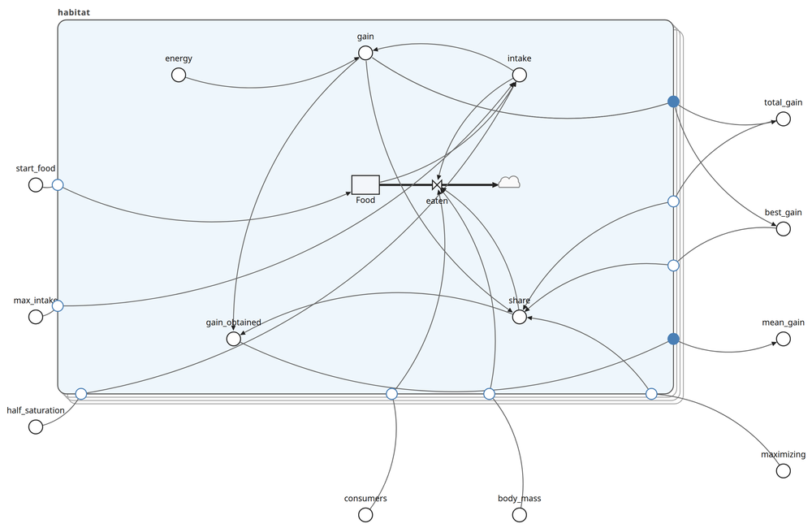

Habitat choice through the dormant season
Herbivores feed through 26 weeks of the dormant season in three habitats offering the same food but different energy yields (0.8, 0.65, 0.5), with no regrowth. They either spread across the habitats in proportion to the gains each offers (matching: maximizing = 0) or all feed where the gain is highest (maximizing = 1). Time is in weeks; food in g/m2.
It opens with its plots and its sliders: move a slider and the model runs again.
Open in SimileFrom Norman Owen-Smith's book Introduction to Modeling in Wildlife and Resource Conservation (Blackwell, 2007), converted from its TrueBASIC program HABCHOICE.TRU and published here with his permission. The model spec: habchoice.json.
